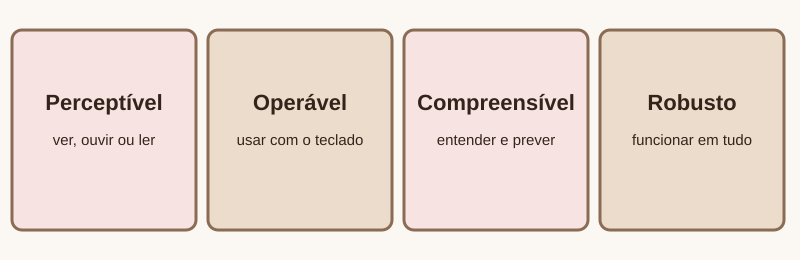

O que é acessibilidade
Acessibilidade vai além das rampas: ela garante o acesso à informação e à comunicação para todas as pessoas.
Conceito
Muita gente associa acessibilidade apenas à eliminação de barreiras arquitetônicas, como escadas sem rampa. Hoje o conceito é mais amplo. Ele envolve a qualidade de vida de todas as pessoas e o acesso à informação e à comunicação.
Veja a diferença entre os dois mundos:
- Mundo físico: o prédio tem rampas e a pessoa com deficiência física entra de cadeira de rodas.
- Mundo virtual: o sítio usa código acessível e a pessoa cega navega com um leitor de tela.
A acessibilidade na Web exige que sítios e portais sejam projetados para que todas as pessoas possam perceber, entender, navegar e interagir com as páginas.
Por que é importante
Para quem não tem limitações, navegar na Web é rápido: usa o mouse, enxerga a tela e assiste a vídeos. Agora imagine não poder usar o mouse, não enxergar a tela ou não ouvir o áudio de um vídeo. A navegação deixa de ser simples.
Os números
Segundo o Censo do IBGE de 2010, o Brasil tinha cerca de 190 milhões de habitantes e 45,6 milhões de pessoas com deficiência. Isso representa 23,9% da população. Uma pessoa pode ter mais de uma deficiência, por isso os grupos abaixo se sobrepõem.
- Deficiência visual: 35,5 milhões.
- Deficiência física: 13,3 milhões.
- Deficiência auditiva: 9,7 milhões.
- Deficiência intelectual: 2,7 milhões.
Quem mais se beneficia
Páginas acessíveis também ajudam pessoas com deficiência temporária, pessoas idosas, quem usa o celular e quem tem medo de usar a internet. Elas ainda aparecem melhor nos buscadores e funcionam em mais aplicativos.
Os quatro princípios da WCAG
A WCAG é o principal documento internacional de recomendações de acessibilidade. Ela foi criada pelo W3C e organiza as regras em quatro princípios.

- Perceptível: a informação precisa ser apresentada de formas que a pessoa consiga perceber. Exemplo: texto alternativo em imagens e legendas em vídeos.
- Operável: todas as funções precisam funcionar pelo teclado e dar tempo suficiente para a pessoa agir.
- Compreensível: o texto deve ser legível e as páginas devem funcionar de modo previsível.
- Robusto: o conteúdo precisa funcionar em diferentes navegadores e em tecnologias assistivas.
Cada critério tem um nível de conformidade: A, AA ou AAA. O nível AA torna o sítio acessível para a maioria das pessoas na maior parte das situações.
Leis e normas
No Brasil, a acessibilidade digital tem base em várias leis. Os links abaixo levam a outros sítios.
- Decreto nº 5.296, de 2004: trata do acesso à informação e à comunicação.
- Decreto nº 6.949, de 2009: promulga a Convenção sobre os Direitos das Pessoas com Deficiência, da ONU.
- Lei de Acesso à Informação (Lei nº 12.527, de 2011).
- Lei Brasileira de Inclusão (Lei nº 13.146, de 2015), também chamada de Estatuto da Pessoa com Deficiência.
- Portaria nº 3, de 2007: tornou obrigatório o eMAG nos sítios do governo federal.
Para conhecer as diretrizes internacionais, consulte a página da WCAG no sítio do W3C.